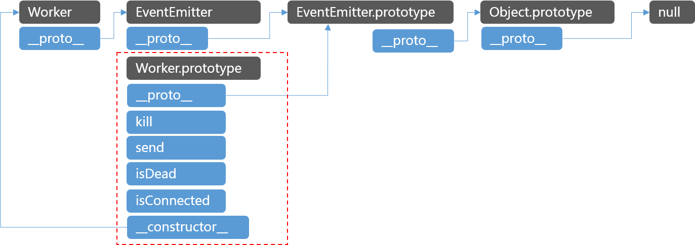

原文连接:https://www.cnblogs.com/dashnowords/p/10920388.html

示例代码托管在：http://www.github.com/dashnowords/blogs
博客园地址：《大史住在大前端》原创博文目录
华为云社区地址：【你要的前端打怪升级指南】
好的代码都差不多，烂的代码却各有各的烂法。
一. 概述
原型链是javascript非常重要的基础知识。最近在阅读node.js，发现许多代码乍一看会觉得很费解，但细细品味之后会觉得非常优雅，对于代码细节的把控和性能的考量让人觉得赞叹。不得不说看大师级的作品真的是一种享受。本篇中我将以cluster模块中子进程管理对象Worker类的实现为例，带你一起看看堪称艺术的代码是如何像手术一样操作原型链，同时理解本节的知识点对于下一篇cluster模块的学习压力。
二. 原型链基础知识
javascript中存在两种原型概念——内置[[prototype]]属性指向的对象和prototype原型对象，prototype原型对象上挂载着实例上的公共方法和属性，[[prototype]]属性可以通过__proto__属性来访问（虽然暴露了这个属性但不推荐使用，平时更多使用Object.getPrototypeOf( )方法来获取，也可以通过Object.setPrototypeOf( )来修改，本文中为了书写方便继续用__proto__），所一个实例的[[prototype]]属性指向的并不一定是自己构造方法对应的prototype原型对象。
javascript中通过new运算符来生成对象，生成的对象的[[prototype]]属性会以一种串联的方式指向多个构造函数的原型对象，以便可以获取可被共享使用的方法，如下所示：
当我们需要实现功能继承时，最简单的做法就是在子类的构造函数里生成一个父类的实例，然后令实例的__proto__属性指向这个实例，但这样做会使得父类上一些本应被添加在实例上的属性和方法被添加到了原型链上，而不是真正的子类实例上，而继承的目的主要是为了获取父类的提供的公共的原型方法，所以ES6的extends语法糖实现的继承效果就是下面这个样子的，后文中我们会看到Worker的原型链也是按照这样的方式来修剪的：
三. Worker类的原型链加工
Worker的源代码在官方仓库的lib/internal/worker.js，代码只有50行，用IDE折叠起来先浏览一下：

我们分析一下它的运作机制，首先声明了Worker这个类，此时它对应的原型链如下：
为了Worker拥有消息收发的能力，需要让它从EventEmitter类来继承发布订阅能力，所以这里将EventEmitter.prototype对象添加到Worker的原型链中：
Object.setPrototypeOf(Worker.prototype, EventEmitter.prototype);这时的原型链就变成了下面的样子，也就是和ES6中extends关键字的实现的继承是一致的：
接下来的这句就有些费解，看起来好像没起到什么作用，你可以自己思考一下，最后我们再揭晓答案：
Object.setPrototypeOf(Worker,EventEmitter);一图胜千言，直接看原型链结果：
这里的加工使得Worker构造方法的__proto__从Worker.prototype改变到了EventEmitter构造方法，这使得原型链直接变成一个三叉形，看起来非常奇怪，而且看起来Worker和它的原型对象Worker.prototype之间断开了联系，如果此时让你生成一个worker实例，你能清楚地说出它的原型链是什么样子吗？
我们先继续往后看，后面的代码在Worker.prototype上添加了一些原型方法，使得原型链再一次变形：

至此，原型链就调整结束了，下一节我们开始看Worker如何生成实例。
四. 实例的生成
worker的实例化是在lib/internal/cluster/master.js中，也就是主线程中生成子线程时调用的，调用的语句是：
const worker = new Worker({
id: id,
process: workerProcess
});也就是说它是通过new操作符来生成实例的。Worker构造方法中的核心语句如下：
function Worker(options){
if(!(this instanceof Worker)){
return new Worker(options)
}
EventEmitter.call(this);
}首先对于this的判断是用来限制Worker只能作为构造函数使用，因为此时this会指向实例，如果this并不是Worker的实例，就说明Worker是作为方法调用的，此时会自动用new操作符来生成实例，如果你它的机制还不清楚，可以先阅读以下Mozilla开发者文档（【MDN中对于new算法的描述】），基本算法是这样的：
1.生成一个新的空对象；
2.将空对象的.__proto__指向构造函数的原型对象;
3.将这个空对象绑定为this指向然后传入构造函数来运行;
4.如果构造函数有返回值，则将返回值作为实例返回，如果没有则将之前生成的空对象作为实例返回。按照上面的描述，当函数被执行到Worker构造方法的函数体中时，原型链是下面这样的：
接下来执行的是:
EventEmitter.call(this);也就是将实例作为this透传到EventEmitter构造方法中去执行，在官方文档中可以找到它实际上执行的是EventEmitter.init方法，语句只有几行，但非常有意思：
EventEmitter.init = function(){
if (this._events === undefined ||
this._events === Object.getPrototypeOf(this)._events) {
this._events = Object.create(null);
this._eventsCount = 0;
}
} 如果实例上没有_events属性，或者它的_events属性存在于自己的原型链上，那么就使用Object.create(null)生成一个空对象，就直接在实例上添加_events属性和_eventsCount属性并赋值。空对象字面量和Object.create(null)生成的对象原型链是不一样的：
后者生成的对象原型链更短，对象的本质是一种散列结构，你新生成的对象很可能只是用来存储一些键值对的映射关系而并不是为了当做对象实例在使用，后一种结构在查找某个属性时需要遍历的属性就更少，效率也会高一些。
至此实例就生成完毕了，它最终的原型链是下面这样的：
可以看到Worker虽然继承了EventEmitter的消息收发能力，但是却并没有生成完整的EventEmitter实例，而只是将必须拥有的实例属性添加在了子类的实例对象上，在实现能力的同时也保持原型链结构的最小化，避免冗余，这一波干净利落的原型链加工真的太秀了，不得不说node.js的细节处理真的堪称艺术。
五. 最后一个问题
前面我们还遗留了一个问题，还记得吗？
Object.setPrototypeOf(Worker,EventEmitter)你可以很清楚地看到实例的原型链和上面这条语句实现的功能没什么关系。事实上它的作用是为了让子类继承父类的静态方法，一张图就能解决的问题，我就不再多bibi了：
这里的目的就是为了尽可能完整地实现面向对象的特性，使得你可以直接通过Worker构造函数来访问到EventEmitter上的静态属性和方法，你可以在本文提供的demo中看到。
六. 一些心得
阅读经典源码是一个非常缓慢且吃力的事情，尤其是没人带没人交流时，但是如果开始了，就请一定保持耐心。比如上面的代码仅仅是cluster模块中很小的一部分，只有短短50行，如果基础薄弱可能要花很久才能消化其中的东西，但是它能够教给你的原型链知识和对开发细节的把控能力，是你读5000行垃圾代码也无法学习到的。